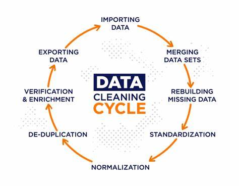

Before the neural networks, the GPU crunching, and the magic of predictions, there's one vital (and often messy) step in every AI project: data cleaning. It's not glamorous, but it's essential. Even the smartest models in the world can't learn properly from dirty, inconsistent, or incomplete data.
In this article, I'll walk you through how I clean my datasets before training any AI model — including the tools I use, mistakes I've made, and what I've learned.
Figure 1: A diagram showing data cleaning process. Source: Medium
1. Why Data Cleaning Matters
When I first started working with AI, I was excited to jump right into model building. But over time, I realized something important: bad data = bad model, no matter how powerful the algorithm.
Common problems I've faced:
- Missing values or nulls
- Inconsistent labels or formats
- Outliers or incorrect entries
- Unbalanced classes (especially in classification tasks)
Cleaning the data first has helped me:
- Increase model accuracy
- Reduce bias
- Improve model generalization
- Understand the data better
2. My Go-To Data Cleaning Steps
Here's my typical step-by-step process, whether I'm working on structured data (like CSVs) or image/text datasets:
Step 1: Load and Inspect
- Use
pandasfor tabular data. - Use
matplotliborseabornfor visual inspection.
Step 2: Handle Missing Values
- Drop columns or rows (if many values are missing).
- Use imputation: fill with mean/median/mode or a constant.
- For images, I check for broken links or corrupted files.
Step 3: Clean and Standardize
- Make sure formats are consistent (e.g., date formats, units).
- Normalize or scale numeric features.
- For text: remove punctuation, stop words, or convert to lowercase.
Step 4: Remove Duplicates and Outliers
- Remove rows that repeat.
- Visualize distributions to find outliers using boxplots or Z-scores.
Step 5: Encode Categorical Variables
- Use one-hot encoding or label encoding.
Step 6: Balance the Dataset (If Needed)
- Use techniques like SMOTE, downsampling, or oversampling.
Figure 2: A comaprison of uncleaned and clean data . Source: Medium
3. Tools I Use Regularly
| Tool/Library | Use |
|---|---|
pandas |
Data loading and cleaning |
numpy |
Handling numerical values |
scikit-learn |
Preprocessing, encoding, scaling |
matplotlib/seaborn |
Visualization of distributions |
OpenRefine |
Cleaning messy tabular data interactively |
Hugging Face Datasets |
Working with large NLP datasets |
Label Studio |
Cleaning and correcting image labels |
4. Mistakes I've Learned From
- Over-cleaning: Once I removed too many rows and ended up with too little data.
- Wrong imputation: Filling missing values with means ruined a time-series project.
- Not saving cleaned data: I had to redo the cleaning process from scratch multiple times. (Always save intermediate versions!)
Conclusion
Cleaning data isn't just a boring step — it's the foundation of any successful AI model. The more time I spend on it, the better results I get. If you're new to AI, focus less on fancy models and more on understanding your data.
Remember: a clean dataset is like clean fuel. If you put garbage in, you'll get garbage out.← Back to Portfolio